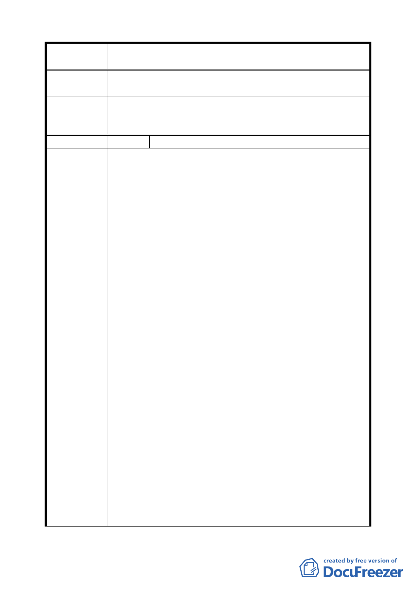

案 名 臺北市文山區都市計畫通盤檢討（主要計畫）案
請重新全面檢討，以還民公道。
委員會議
決議
本陳情土地均位於地形陡峭地區，不適合建築開發利用，維
持原計畫為保護區、風景區及人行步道用地；至於都市計畫
歷年情形之疑慮，則請市府都市發展局協助陳情人瞭解。
編 號 41 陳情人 謝清榮先生（09530175100）
建議位置：政大段四小段 279、279-2 地號。
建議理由：
一、本人及兄長所有文山區政大段四小段 279、279-2 地號土
地為家中祖傳工作之農地，前於 69.12.4 以府工二字第
47531 號公告「配合景美溪堤防修訂附近地區主要計畫
案」，將原本農業區改編為住宅區。
二、後於 70.9.17 配合地區之實際需求供派出所、里民活動中
心等公共設施使用為由，以府工二字第 39339 號公告「擬
（修）訂景美溪堤防左岸以東（新光路路堤以南至無名
溪），右岸以西、以北（第四號橋以南至寶橋）附近地區
細部計畫案」，將本案地號土地改編為機關用地及道路用
地，後又於 77.2.27 府工二字第 216644 號公告「修訂木
柵區政治大學附近地區細部計畫（第二次通盤檢討）暨
景美溪左岸堤防以東附近地區細部計畫（第一次通盤檢
陳情理由
討）案」考量機關用地整體利用，重新調整道路用地為
（政大）
機關用地。此後歷年來調整或檢討時，皆繼續維持機關
用地之編訂而未有變動迄今。
三、依計畫書中事業及財務計畫表所載，公共設施取得方式
為徵購，主辦單位及用地機關為警察局，完成期限為 70
年 7 月至 75 年 6 月，施工預定完成期限為 71 年 7 月至
75 年 6 月，經費來源由警察局年度預定預算；另公共設
施種類欄項中尚有「機關（里民集會所等）」，土地取得
方式為徵購，主辦單位為民政局，徵購勘測設計預定完
成期限為 70 年至 74 年，施工預定完成期限為 71 年 7
月至 75 年 6 月。惟迄至 77.2.27 公告「修訂木柵區政治
大學附近地區細部計畫（第二次通盤檢討）暨景美溪左
岸堤防以東附近地區細部計畫（第一次通盤檢討）案」
時，因警察局原訂之指南派出所已另改建完成，無保留
必要，遂檢討本案留交民政局用以設置里民活動中心。
四、本陳情土地歷年土地使用分區之變動，係從農業區變更
二五